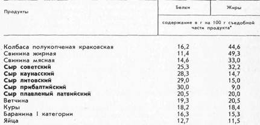
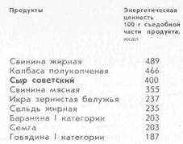

Сыр — концентрат молока

Молоко содержит сотни различных веществ. В их числе практически все жизненно важные компоненты пищи человека: белки, легкоусвояемые жиры, углеводы, минеральные соли, витамины и др. Белки, жиры, минеральные соли молока переходят в сыр почти в тех же пропорциях. Исключением являются незначительная часть белка, представляющая собой альбумин и глобулин (для сыра используется основная часть молочного белка — казеин[2]), и большая часть молочного сахара — такова уж технология.[3] Сыр содержит и наиболее ценные витамины молока.
Сыр называют белково-жировым концентратом молока. Если в молоке содержание жира составляет в среднем 3,5 %, то в сыре — 20–30 %, белка — соответственно 3,2 и 20–25 %. Место сыра в ряду белково-жировых продуктов показывают следующие сравнительные данные.

Эти и все другие данные о химическом составе и энергетической ценности (калорийности) сыров взяты из книги «Химический состав пищевых продуктов», материалы которой одобрены Министерством здравоохранения СССР («Пищевая промышленность», М., 1976).
В перечне приведенных продуктов сыры, особенно маложирные, по содержанию белка занимают первые места, заметно превосходя мясо и яйца.
А вот как распределяются наиболее питательные животные продукты по энергетической ценности:

Для сравнения не взяты жировые и кондитерские продукты, энергетическая ценность которых выше благодаря большому содержанию жира и сахара.
Высокая питательная ценность сыра обусловлена не только тем, что он содержит большое количество белка, молочного жира, минеральных солей, витамины, но и тем, что он хорошо усваивается организмом. Усвояемость белков и жира, содержащихся в сыре, достигает 95–97 %.
Сыр практически полностью усваивается, так как он не содержит никаких веществ, которые не в состоянии был бы переварить человеческий организм (как клетчатку овощей). Уместно добавить, что при производстве сыра воздействие на молоко ограничивается тепловой обработкой при относительно невысокой температуре. Консервирующие, ароматические зещества, синтетические красители, эмульгаторы, сгустители не применяются.
Итак, сыр состоит в основном из белка, жира, минеральных солей, витаминов. Рассмотрим роль каждой из этих главных составных частей продукта в формировании его пищевой ценности.